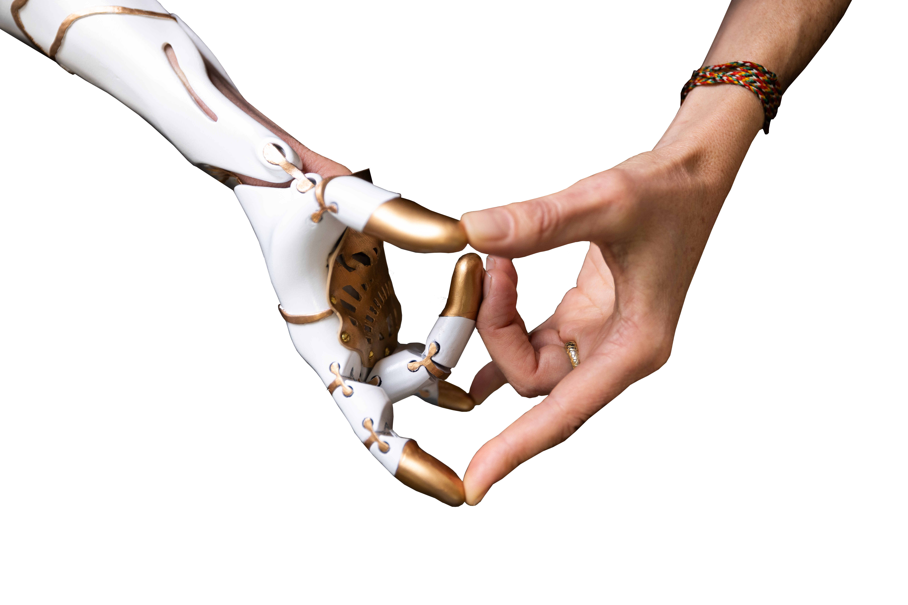

The Hands
Trueformas Hands
As the project evolved, it became clear that there would never be a single "perfect" prosthetic. Just as people express different parts of themselves through clothing, jewelry, or hairstyles, prosthetics can also become expressions of identity.

Collection Overview
This realization led to the creation of the Trueformas Hands, a collection of concepts that explore different ways of relating to the body through design.
Tap the main frame or any thumbnail to see more views.
Together, the Trueformas Hands explore a simple idea: prosthetics can do more than restore function; they can help transform the way people experience themselves and the way the world sees them.
01
Kintsugi
Inseparable Compassion
Inspired by the Japanese art of repairing broken ceramics with gold, the Kintsugi Hand celebrates difference instead of hiding it. Its porcelain-white surface look symbolizes a new beginning, while the gold lines represent transformation, connection, and the beauty of rebuilding rather than returning to what once was.
I want this hand02
Colorida
Energy of Innate Awareness
Resin-printed and translucent with vibrant shifting colors, Colorida celebrates visibility, joy, and self-expression. Its textile strap and embroidery beaded work draws inspiration from Colombian ancestral weaving traditions, connecting advanced technology with cultural memory while allowing the prosthetic to become part of everyday life, even when it is not being worn. In a human-centered design approach, the strap also allows the hand to be worn as a belt when the person's limb needs to rest from the rigid socket.
I want this hand03
Luminous
Primordially Pure
Completely transparent, Luminous reveals everything: the mechanism, the residual limb, and the relationship between the body and the prosthetic. Without imposing a narrative, it invites each person to interpret differences in their own way, embracing honesty, openness, and possibility. It has also been observed that when the hand is worn, others feel more at ease approaching and looking at the residual limb, as if the design itself grants permission to engage without tension or the sense that they should not be looking.
I want this hand